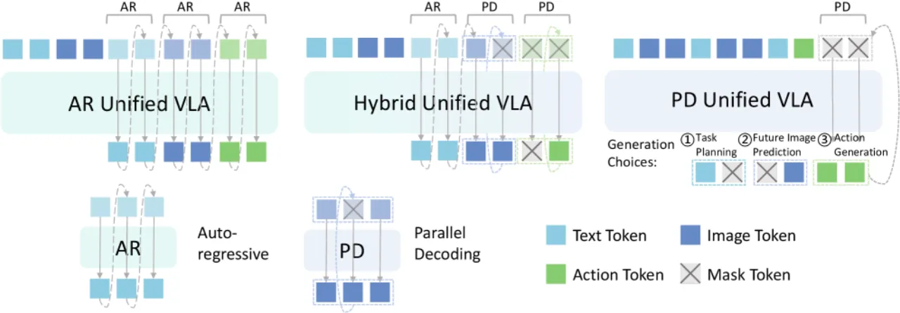
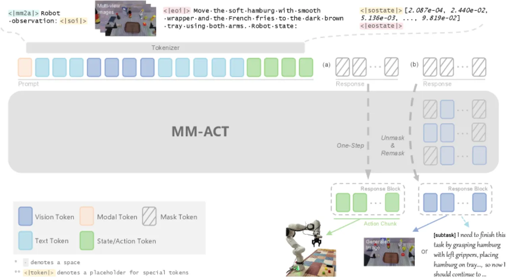
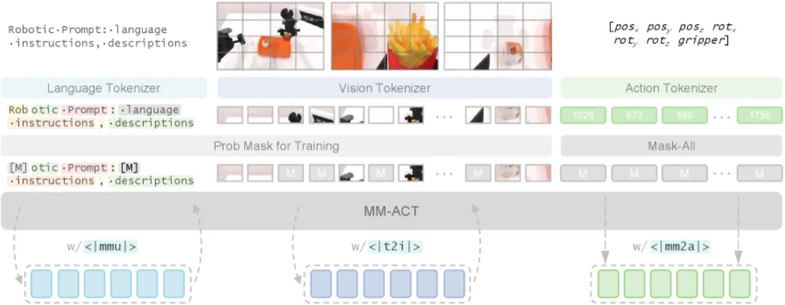
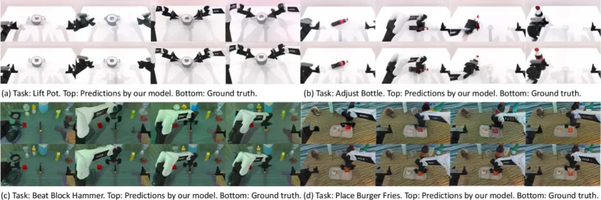

MM-ACT 将文本、图像与动作纳入共享 token 空间，用 Context-Shared Multimodal Learning 统一训练三种模态的生成，动作解码只需一步并行推断，真实机器人操控成功率达 72.0%，超越 π₀（70.0%）。
通用机器人策略需要同时具备语义理解（任务规划）与环境交互（动作预测）两种能力，但现有方法往往将二者分离处理，难以充分利用多模态信号之间的互补关系。
"A generalist robotic policy needs both semantic understanding for task planning and the ability to interact with the environment through predictive capabilities."

MM-ACT 将文本 token、图像 token 与动作 token 编码进同一序列，通过 re-mask 并行解码生成文本/图像，通过一步并行解码生成动作，并用 Context-Shared Multimodal Learning 在共享上下文下统一监督三种模态。

模型为文本、图像、动作分别配置模态专属的 tokenizer，将三种模态映射到同一维度的 token 序列。推理时，所有已知信息（观测图像、语言指令、文本描述、机器人状态）拼接为共享上下文，掩码位置对应待生成的目标 token。
对于文本和图像生成，MM-ACT 采用 re-mask parallel decoding 策略：每个解码步骤中，模型并行预测所有掩码位置的 token，然后依置信度保留高分 token，低置信度 token 重新被掩码（re-masked）并在下一步重新预测。文本使用线性调度；图像使用余弦调度控制每步揭示的 token 比例。
动作生成采用 one-step parallel decoding，即"predict all masked tokens simultaneously"，单次前向传播即可输出完整动作 chunk，支持 40 Hz 的实时控制频率，推理耗时仅约 0.22–0.23 秒（chunk size 8–16）。

MM-ACT 的核心训练范式：三种模态的生成任务共享完全相同的输入上下文，使用统一的 cross-entropy loss 同时监督文本、图像与动作的 token 预测。这使模型在学习动作时能同时接收文本语义与图像预测的梯度信号，形成双向增强。
在三个基准上评估：LIBERO（仿真，in-domain）、Franka 真实机器人（3 个任务）、RoboTwin2.0（仿真，out-of-domain，8 个双臂任务）。基线方法包括 π₀、UniVLA、OpenVLA、OpenVLA-OFT。
| 方法 | LIBERO 平均 | Franka 真实 | RoboTwin2.0 |
|---|---|---|---|
| OpenVLA | 76.5% | — | — |
| OpenVLA-OFT | — | 58.6% | 23.13% |
| π₀ | 94.2% | 70.0% | 48.13% |
| UniVLA | 95.5% | — | — |
| MM-ACT（本文） | 96.3% | 72.0% | 52.38% |

| LIBERO 子集 | MM-ACT 成功率 |
|---|---|
| LIBERO-Spatial | 97.8% |
| LIBERO-Object | 99.4% |
| LIBERO-Goal | 94.8% |
| LIBERO-Long | 88.0% |
| 平均 | 96.3% |
作者从三个维度进行消融（均在 RoboTwin2.0 上测试）：
Stage 2 引入动作模态后，文本生成精度从 81.5% 下降至 68.7%，作者认为"text modality is prone to overfitting with increased training steps"，而图像模态则持续受益于跨模态学习。
加入动作模态训练后，文本任务规划准确率从 81.5% 降至 68.7%。作者解释为"text modality is prone to overfitting with increased training steps"，但并未给出针对性的缓解方案。这意味着模型在语言理解与动作执行之间存在训练权衡。
消融实验表明，chunk size=16 时 re-mask PD 比 one-step PD 精度高 13%，但推理时间从 0.23s 增至 1.06s，无法满足 40 Hz 实时控制需求。当前方案选择 one-step PD 牺牲精度换速度，高频控制场景下的最优解码策略仍待探索。
最优配置下 RoboTwin2.0 的成功率为 52.38%，在 8 个双臂任务中仍有近半数失败。双臂协同操作的难度远超单臂场景，当前框架对双臂时序协调建模的能力有待进一步验证。
Stage 2 图像质量指标 PSNR 14.23、SSIM 0.80、LPIPS 0.09，PSNR 数值相对偏低，说明生成图像与真实未来帧之间仍存在较大像素级差异，影响其作为预测辅助信号的可靠性。